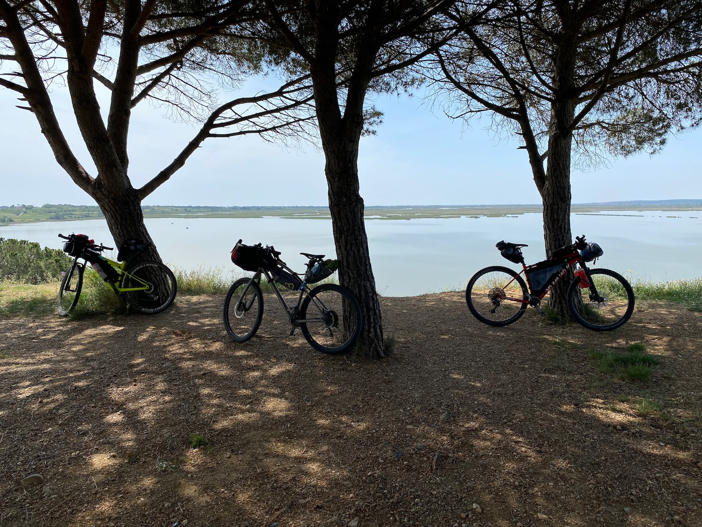

Un tour de l’Hérault VTT en vidéo

Vendres
Comme j’ai déjà raconté plusieurs 727, j’ai préféré cette fois monter une petite vidéo, tournée avec nos mobiles. Nous avons effectué le périple en cinq jours, ce qui me paraît un bon compromis pour des vététistes entraînés tout en laissant du temps pour farnienter.
Le premier jour, il faut avaler 150 km et 1500 de D+, sinon la suite devient compliquée. Le deuxième jour est le plus difficile, avec 2 300 de D+ pour 75 km. La suite passe alors sans difficulté si on a atteint le lac de Vézoles avec quelques réserves.
Ce 727 a été l’occasion de tester des variantes, d’en adopter certaines, d’en rejeter d’autres, et surtout d’en envisager de nouvelles, ce qui me donne déjà envie de repartir sur les chemins de mon département.